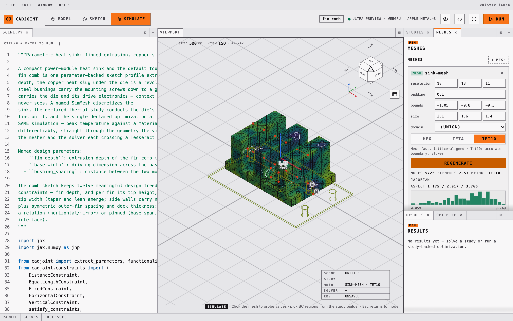
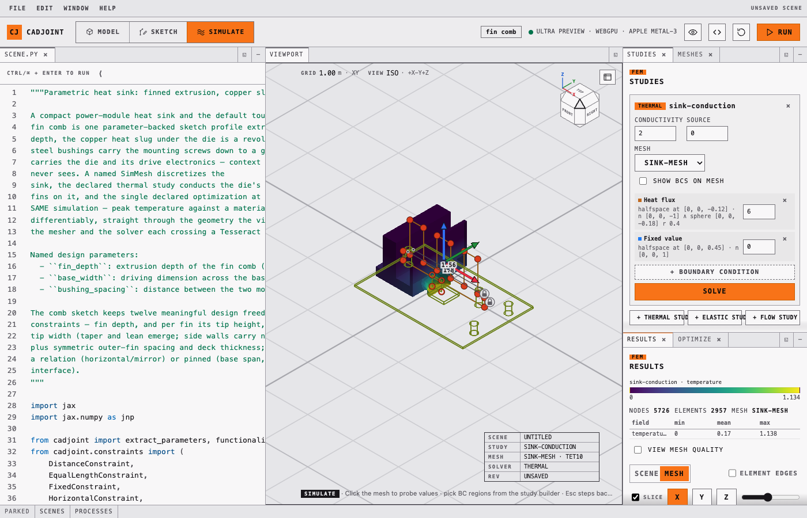
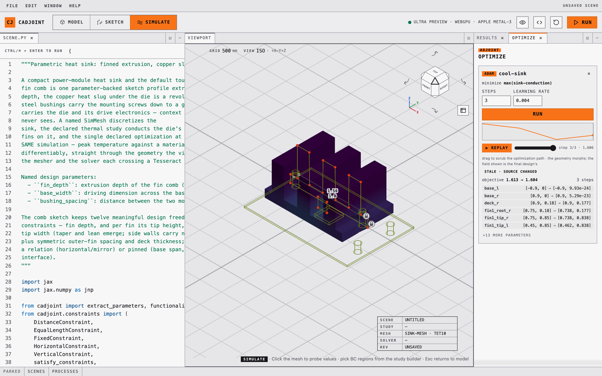

The Playground
The playground is a local browser application: a Python editor on the left, a live WebGPU viewport on the right, and a dock of panels that read and rewrite the program in the editor. It is the interactive face of the whole toolchain — the same SimMesh, ThermalStudy, and Optimization declarations that a script runs are the ones the panels edit.
The single rule that makes it coherent: the Python source is the only state. Dragging a sketch vertex, adding a boundary condition, or accepting an optimized design all rewrite literals in the program. There is no hidden scene graph to drift out of sync, and anything whose literals cannot be rewritten — geometry built in a loop, or from a variable — still renders, but is read-only.
{kind=link}
Start it
uv run cadjoint-viewer --open # serves http://127.0.0.1:8765/ and opens a browserEquivalent invocations, and the flags:
uv run python -m cadjoint.viewer.playground # same server, no browser launch
uv run cadjoint-viewer --port 9000 # pick a different port
uv run cadjoint-viewer --helpNo extra dependencies are needed — the server is stdlib-only — but the viewport needs a WebGPU-capable browser. Stop with Ctrl+C.
The starter program is a parametric heat sink: a fin comb extruded from one constrained sketch profile, a revolved copper heat slug under the die, and two press-fit steel bushings. It also declares a SimMesh, a thermal study, and an optimization over the whole thing, so every part of the app has something real to act on the moment it opens.
The playground executes the editor contents as Python on your computer. It binds only to localhost and protects compile requests with a per-session token, and it compiles each edit in a timed child process so a failed edit cannot take down the server — but it is not a sandbox. Only run code you trust.
One desk, many windows
Every panel is a window: the editor, the viewport, Objects, Materials, Sketch, Meshes, Studies, Results, Optimize, Scenes and Processes. A window can be moved, closed, minimised to a tray, tabbed with another, stacked, dragged to split the desk, floated over the page and docked back. The WebGPU canvas keeps its context through all of it — the viewport is repositioned, never re-parented — and the arrangement is persisted in the browser, with Window ▸ Reset layout to get the default back.
The toolbar’s three-cell switcher — M cycles it, Esc returns to Model — picks a desk: a default arrangement of windows and the tool set the rail offers, the way Blender scopes its tools to a mode.
| Desk | Opens by default | Tools on the rail |
|---|---|---|
| Model | Editor, viewport, Objects, Materials, Optimize | Select, place box / sphere / cylinder, sketch on a face, move and rotate gizmos, delete |
| Sketch | Editor, viewport, Objects, Sketch | Everything in Model, plus polygon editing, modify, and constraint annotation |
| Simulate | Editor, viewport, Studies with Meshes tabbed behind it, Results with Optimize tabbed behind | None — the viewport becomes a picker for boundary conditions |
Simulate is not a second application. Meshes, Studies, Results and Optimize are ordinary windows on the same desk as everything else, and Window ▸ opens any of them from any desk; the desk only decides which are open when you arrive. Scenes and Processes are parked in the tray on every desk rather than docked on any, because a browser or a monitor that took a column before you asked for it would be in the way of the work. Selecting a sketch profile in the viewport auto-enters the Sketch desk once; Esc or the switcher leaves again.
All three desks share one accent. Which one you are on is read from the position of the filled cell in the switcher, the word in the hint bar, and the tool set — not from a hue, because colour in this app is reserved for data.
Rendering is deliberately not a desk. Presets, shading, shadows, quality and the views of the field live in a popover behind the eye icon, which opens from any desk — how the scene is drawn is orthogonal to what you are editing.
{kind=link}
Modelling
Construction geometry — sketch profiles and primitives — draws over the rendered solid as a depth-tested wireframe, so an edge behind the model is hidden by it.
| Action | Result |
|---|---|
| Click a vertex handle | Selects it and highlights the exact literal in the code |
| Drag a handle | Rewrites that vertex’s coordinates and rebuilds the solid |
Polygon (P), then click edges |
Inserts a vertex per click until Esc |
Select a handle, press Del |
Removes that vertex |
Box / Sphere / Cylinder (B / S / C), then click |
Writes a Solid.* call into the program |
| Click a solid’s outline | Selects it and shows the gizmo |
| Drag a gizmo arrow or ring | Rewrites position= or rotation= |
| Drag empty space / Shift-drag / scroll | Orbit / pan / zoom |
| Click a face of a solid | Highlights it; New sketch on face plants a sketch there |
O and V switch between selecting whole objects and selecting sketch vertices; G and R switch the gizmo between move and rotate. Ctrl/⌘ + Enter runs the program, Ctrl/⌘ + Z undoes the last source change.
Finding your way around
The world is Z-up, as every scene is, and the viewport defaults to orthographic projection — 5 toggles perspective. A floor grid on z = 0 rules the ground with one honest 1-2-5 spacing readout that follows the zoom, and a title block names the scene and the view; an empty viewport rules the floor rather than rendering black.
The navigation cube in the corner is a chamfered cube in the FreeCAD lineage: its six faces, twelve bevels and eight corners are the twenty-six standard views, each a real facet you can press, and the flank controls turn a quarter about the camera’s own axes. Shift-click a facet for the view directly opposite — from above the floor there is never a BOTTOM to click, but its far side is one Shift away. 1, 3 and 7 are front, right and top (with Ctrl for back, left and bottom), and 9 turns to the opposite side.
One construction-overlay switch hides everything the app draws about the model rather than of it — construction edges, sketch handles, the gizmo, constraint marks and their dimension labels, the boundary-condition preview — for a presentation state that is the solid, the field and the floor and nothing else.
{kind=link}
Sketching on a face
The compile payload lists every construction node’s analytic faces — read off the construction tree, never off the render mesh — each with its plane frame, its world-space boundary polygon, a hit tolerance, and the accessor that names it in source. Hover resolution happens in the browser: the raymarch hit is tested against those polygons, so highlighting costs no round trip.
Planting a sketch does take one. The viewer posts a set_sketch_plane patch naming the face — the feature’s line plus which face of it — and the server rewrites the sketch’s plane= argument to SketchPlane.on(body.cap("+")), SketchPlane.on(block.face("+z")), or, when the hit landed on a curved surface with no face to name, SketchPlane.tangent(body, near=[...]).
What gets written is the reference, never the coordinates it currently evaluates to. Re-dimension the parent and the sketch moves with it, and the gradient of anything downstream still reaches the parent’s depth — see faces as references. A sketch can only sit on geometry the program builds before it; the server refuses the patch otherwise rather than writing a NameError.
Simulating
Four windows — Meshes, Studies, Results and Optimize — work over the same declarations a script would read; the Simulate desk opens them, and Window ▸ opens any of them anywhere else. Every edit goes through the same source-patch round-trip as the sketch tools; solving posts the study’s name, and the server re-derives everything from the declaration. Every option they offer — mesh method, study kind, boundary-condition type, objective metric, gradient path — is one of the cadjoint.enums option sets, so the window’s choices, the validator’s rejections and the generated TypeScript unions are the same list.
Meshes declares and regenerates SimMesh objects. Resolution, padding, bounds, size, and the Hex / Tet4 / Tet10 method are editable inline; regenerating reports node and element counts and shades the mesh by element quality with a histogram beside it. A tet mesh that had to climb the refinement ladder says which grid it was actually built on.

Studies holds the study declarations, their materials, and their boundary conditions — and this is where the viewport becomes a picker. Clicking the surface proposes a Nodes.sphere selection sized from the mesh spacing; shift-dragging a rectangle proposes a Nodes.box from the world-space bounds of the vertices inside it. The proposal is written into the program as a real selection expression, so a BC picked by hand is indistinguishable from one typed by hand, and it re-resolves against whatever the mesh becomes. A study with no conductivity= (or youngs= / poisson=) takes the property from the scene’s materials, sampled per element at solve time.

Optimize runs the declared Optimization objects, streaming each step’s objective and gradient norm as it arrives. When a run finishes it lands in a player: a convergence sparkline with a moving cursor, play/pause, and a scrubber that replays the geometry along the trajectory by substituting each step’s parameter snapshot and ghost-compiling it. Only the adopted final source ever touches undo history. While it runs, a chip in the mode strip shows what is running and for how long, wherever on the desk you happen to be looking.

Results browses the solved surface — a field picker that swaps displayed scalars without re-solving, a deformed view for elastic results, per-vertex BC previews, and an axis-aligned slice plane. The field is drawn in the viridis ramp and nothing else in the app is, so colour on screen always means data.
Materials
A Material carries two families of property in one object: the optical ones the renderer shades with (color, roughness, metallic, opacity, ior, reflectivity) and the physical ones the simulation solves with, in SI — density, conductivity, specific_heat, youngs_modulus, poisson_ratio, thermal_expansion, yield_strength. Optical properties always have a value; physical ones default to unspecified, so a scene that only cares about looks never has to invent a Young’s modulus.
Both families are editable from the inspector through one operation, set_material_property, which names the material by its stable id, its payload index, or its name, and carries the property and a number:
{"op": "set_material_property", "id": "assign:copper",
"property": "youngs_modulus", "value": 1.185e11}The physical half is why the operation exists rather than reusing set_value. An unspecified property has no keyword in the call and therefore no span in the payload, so there is nothing for the inspector to drag — the material payload publishes physical (the value, or null), units, free, and a spans entry only for the properties actually stated. A row with no span is a row the inspector offers to state: the same request with a number adds the keyword to the call. Sending "value": null takes it back out, returning a physical property to unspecified and an optical one to its default.
Values are checked against the same brackets Material enforces when free=True, so a number the viewer accepts is one the optimizer accepts, and a rejection names the unit it was measured in — `density` must be a number from 1 to 25000 kg/m^3.
| Property | Range | Unit |
|---|---|---|
density |
1 – 25000 | kg/m^3 |
conductivity |
0.001 – 3000 | W/(m·K) |
specific_heat |
1 – 10000 | J/(kg·K) |
youngs_modulus |
1000 – 1e12 | Pa |
poisson_ratio |
0 – 0.499 | — |
thermal_expansion |
0 – 0.001 | 1/K |
yield_strength |
1000 – 1e11 | Pa |
roughness, metallic, opacity, reflectivity |
0 – 1 | — |
ior |
1 – 3 | — |
The edit is span surgery like every other: the keyword is written on the line of the argument it follows, so no line number moves — unless that would push the line past 100 columns, in which case the keyword wraps onto its own line and the file grows by exactly one.
A material built by a catalogue factory — alu = aluminium_6061() — has no property keyword to edit, and the operation says so rather than guessing. Sending the same request again with "expand": true rewrites the binding as the literal Material(...) the factory builds, one keyword per line, and then applies the edit; from there every property is an editable row. Only the cheap conversion is done: a bare, argument-free factory call, whose result the server can build and read without executing any of the user’s own code.
Looking at the field
The solid is one way to look at a signed distance field, and the render popover offers four more. All of them are branches inside the same generated shader, views of the one SDF the solid is traced from, so there is no second scene to fall out of step.
| View | Shows |
|---|---|
| Solid | The raymarched surface everything else in the app assumes |
| Slice | The signed value of the field on a plane, inside and outside, with isolines that tighten toward the boundary — the part’s own section outline is the f = 0 contour |
| ∇f | The gradient magnitude on the same plane: |∇f| = 1 is a true distance, and anything else is where a blend, a scale or a twist has stopped it being one |
| N | World-space normals on the surface |
| Z | Linear camera depth |
The slice plane takes any axis and sweeps a slab of ±2 units about the origin; the legend prints the plane’s actual coordinate, and both slice views draw their isolines one pixel wide at every zoom. The slice is data, so it is composited after tone mapping in the achromatic ink the chrome uses, and the field values are read from the same shader sdf() the primary rays march.
An iso-offset slider traces the solid at f = c instead of f = 0: a positive offset dilates the part, a negative one erodes it. It is applied to every sdf() read — primary rays, shadows, normals — so the offset surface shades and casts like a real surface rather than a shell drawn over the old one, which makes it a quick check of a wall thickness or a clearance.
Rendering
The eye icon opens the render popover. It carries three editable presets — X-Ray for modelling and inspection, Studio for clean path-traced materials, Wire for construction geometry only — over independent switches for shadows, reflections, feature edges, and the dual-contour wireframe. Presets are stored in the browser and can be edited and saved.
The two mesh overlays are one extraction. Turning either on dual-contours the scene on the viewport’s own 64³ grid and splits the result into two layers. The wireframe draws the dual-contour quads. Feature edges draws the sharp layer, and it is read off that same lattice: cells are classified as creases, corners or exact min/max CSG seams — the first from the spread of the Hermite normals, the last from which branch of the boolean wins — and the links between neighbouring feature cells are the chords the overlay draws. Feature-aware QEF placement puts each of those vertices on the feature it belongs to, and a vertex sitting on a CSG seam is then Newton-projected onto the common zero set of the operands meeting there, one program for every seam group at once, so it lands on the seam rather than within a cell of it. Both layers draw those projected positions, so the wireframe and the sharp layer agree everywhere.
What the lattice cannot do is beat its own resolution. A chord per cell the curve crosses means a bore rim is a polygon whose vertex count is whatever the grid happened to give it, not a circle, and everything downstream of the classifier is the price of the lattice being the only witness: an on-surface subgradient re-check, identity grouping so two curves within a cell of each other cannot cross-link, a tangent-alignment test, chain building that holds every vertex at degree two, and debris pruning.
A rounded corner is still an edge if the rounding is finer than the overlay can show. The grid puts one vertex where a sub-cell fillet is, so its edge is drawn where the sharp corner would have been — which is what a bracket filleted at 0.02 looks like on screen, and where its bore rims come from. Round a corner by more than a cell and it becomes curvature the viewport genuinely renders, and no line is drawn inside it.
Tracing each curve instead — following the cross product of the two surface normals from one corner to the next, so a rim is a circle at any cell size — is the feature_edges plugin kind. The compile payload names the source either way: lattice here, graph when something fills the kind.
Path tracing accumulates progressively: one jittered camera sample per pixel per frame, averaged in linear HDR, with cosine-weighted diffuse and importance-sampled GGX reflection, Schlick-Fresnel glass, finite-sun next-event estimation, multi-bounce environment lighting, Russian-roulette termination, and ACES tone mapping in a separate presentation pass. Accumulation resets automatically when the scene, camera, viewport, or mode changes.
Quality is a three-step budget. High is the default at roughly 900,000 pixels, six bounces, two sun-visibility samples per hit, and 512 samples per pixel; Draft drops to 320,000 pixels, three bounces, one visibility sample, and 128 samples; Ultra opts into 1.6 million pixels, eight bounces, four visibility samples, and 1,024 samples.
Two half-float textures alternate between sampled input and render attachment. WebGPU does not allow one texture to be sampled and rendered into in the same pass, so this ping-pong is required rather than incidental. The finite sun is sampled only through next-event estimation and is not part of the environment radiance seen by BSDF paths, so the strategies do not overlap; multiple importance sampling becomes useful only once emissive area lights or an importance-sampled environment map are added. The scope decisions are recorded in WebGPU SDF path tracing.
Export
File ▸ Export… writes one object of the program as a file, in the formats the library already exports: STL (binary or ASCII), OBJ (coplanar quads merged into n-gons), STEP and, once the program declares a study, VTK. The dialog asks for the format, the object — any module-level variable bound to an SDF, scene by default — and the lattice resolution in cells along the object’s longest axis; the lattice is fitted to the object the same way a SimMesh without explicit bounds is. STEP is the faceted writer of cadjoint.meshing — coplanar polygons merged and written as B-rep topology, which reads back into a CAD kernel as one closed solid but carries the mesh’s own faces, not the design’s. The dialog’s analytic switch asks the step_export plugin kind for exact surfaces instead; with nothing filling it the export falls back to the faceted writer and says so in its report. VTK takes a declared study rather than an object and writes its solved mesh and fields for ParaView, solving first if the program has not. The run is a job like a solve — the chip beside the mode switcher counts it and can cancel it, and the Processes window lists it — and the browser saves the file under the scene’s name (heatsink-scene.stl). The endpoint is POST /api/export; a success is the file itself with Content-Disposition and the job id in X-Cadjoint-Job, a failure the usual JSON.
Compilation path
Each run follows the same path as the shader backend:
- The local server evaluates the Python in a child process and reads
scene. - cadjoint walks the SDF graph and writes WGSL
sdf,material_baseandmaterial_opticsfrom it directly. - The browser embeds those in the preview or path-tracing runtime and builds the WebGPU pipelines.
Step 2 used to go through JAX: trace the scene, export it to StableHLO, walk that text. XLA never produced an executable on that path — it was a tracer — and the round trip was most of a compile. Walking the graph instead takes scenes/motor_shield.py from 10.5 s to 1.6 s, and the module it writes is smaller by an order of magnitude, because a profile’s vertices are buffer slots rather than unrolled code and a pattern is a loop rather than N copies. The traced backend is still there and still tested against this one on a real device, point for point; CADJOINT_SHADER_FORM=traced selects it. A scene using a shape the direct backend has no kernel for falls back to it automatically and says so.
The code icon shows the complete generated WGSL. Python tracebacks and WGSL compiler errors appear under the editor.
Every request runs in a fresh child process, so nothing would survive between edits by default. Two things make the second edit cheaper than the first. The worker turns on JAX’s persistent compilation cache under ~/.cache/cadjoint/jax (CADJOINT_CACHE_DIR to move it, CADJOINT_NO_COMPILATION_CACHE=1 to opt out), so a program compiled once is reused by every later process; and the scene is traced with its parameter values as arguments rather than literals, so a re-dimensioned design lowers to the same program and hits that cache. Measured on the starter scene (benchmarks/jax_compile_profile.py, cold cache against warm): a compile 2.1 s → 1.1 s, a mesh overlay 12.7 s → 5.9 s, a mesh inspection 6.9 s → 1.9 s, a solve 14.3 s → 3.1 s. The server warms the cache for the scene it opens at start — the warmup job in the Processes window — so the first overlay you ask for does not pay the cold cliff. The linear solve itself runs in PETSc, outside XLA, but the assembly around it is hundreds of small XLA programs, and those are what the cache saves on a solve. See program size and the performance notes.
Code parity
The source is the single truth: every viewer action is a rewrite of a span of the user’s Python, and the payload the viewer draws is read back out of that same text. Three things hold that contract together.
Stable identities
A payload entry used to be addressed by the line it sat on at the last compile. Any edit between the compile and the click — a blank line, an import, an add_sketch that inserts three lines — moved every line and silently aimed the next patch at the wrong statement.
Every addressable thing now also carries a stable id, derived from its AST path and the name the program assigned it rather than from its position:
| Id | Names |
|---|---|
assign:comb_profile |
The call that is the value of a module-level assignment — sketches, primitives, features, materials, studies, meshes, optimizations |
call:extrude@comb_profile |
A feature call bound to no variable, keyed by the sketch it consumes |
sketch:comb, box:block |
An unbound construction call carrying a literal name= |
bc:sink-conduction[1] |
An ordinal inside its owner — also constraint:<sketch>[i], vertex:<sketch>[i] |
plane:comb_profile, face:sink:cap+ |
A sketch’s work plane; one analytic face of a feature |
Ids survive every edit that does not touch their own statement. Only the #<n> fallback — an object with neither a variable nor a name= — is ordinal, and every statement the viewer itself writes is named.
Every /patch request takes id wherever it used to take line, and the id wins: it is resolved against the text in that same request, so a stale line cannot survive the round trip. The old fields still work unchanged, and the compile payload carries both — stableId on every entry, plus an identities table mapping each id to the line it currently sits on.
A schema, and types generated from it
The payload is defined once, as pydantic models in cadjoint/viewer/schema/. The compile worker validates every payload against them before answering, and cadjoint/viewer/schema/payloads.d.ts is generated from the same models — one interface per payload shape, and one per /patch operation, discriminated on op. Regenerate it with:
python -m cadjoint.viewer.schema.emitA test regenerates and diffs, so the models and the checked-in types cannot drift apart.
The round-trip invariant
tests/viewer/test_parity_roundtrip.py closes the loop for all 28 operations: for each generated request the patched text must still parse, patching twice from the same input must be byte-identical, the id and the legacy line must produce the same source, and compiling the result must show exactly the change that was asked for. Operations that describe a state rather than a step — every set_* — must additionally be idempotent.
Editor intelligence
The editor lints and completes as you type. Both analysers are static — they read the program without importing or running it — so they are safe to fire on every keystroke, unlike compilation, which needs its disposable child process.
Three endpoints back it, all answered in the server process:
| Endpoint | Backed by | Warm latency |
|---|---|---|
POST /api/lint |
the ruff binary, --isolated |
~6 ms |
POST /api/complete |
jedi, warm per server process |
~15 ms |
POST /api/signature |
jedi.Script.get_signatures |
~2 ms |
Every line in these requests and responses is 1-based and every column is 0-based — CodeMirror’s and jedi’s own convention.
Diagnostics carry a severity of error, warning or info, so the gutter markers and underlines are colour-coded: a syntax error or an undefined name is red, a probable mistake such as an unused import is amber, and an import-order or modernisation remark is blue. Where ruff knows a fix, the diagnostic carries its text and edits, and the editor offers it as an action.
The most valuable diagnostic is not static at all. When a /compile fails with a traceback that names a line of your scene, that failure is remembered and folded into the next lint of the same text — the line that actually blew up gets a red squiggle. Editing anything invalidates it, so it never outlives the code that caused it.
Completions resolve against the installed cadjoint, so they know its real types: SketchPlane( offers origin= and normal= with their defaults, plane. offers to_world, frame, rotation_matrix, and each entry’s popup carries the signature and docstring. Jedi pays a few hundred milliseconds for its first analysis; the server primes it on a background thread at startup so the first popup you see is already warm.
Both tools are optional extras (pip install "cadjoint[editor]"). Without them these endpoints answer with an install hint and the editor simply goes quiet.
Work that outlives the request
Every request that costs real time — a compile, a mesh extraction, a mesh inspection, a simulation, an optimization run, a lint, and the startup warm-up — is registered as a job in the server process the moment it starts, and stays registered after it ends. Nothing about the endpoints changes: they answer exactly as before, with a job_id added.
That id buys three things a plain request/response API cannot give you.
A result survives the panel that asked for it. Switch modes, close the Results tab, come back an hour later: GET /api/jobs/<id>/result returns the identical payload the original request received, byte for byte, without re-running a nine-second solve. Each job also carries the sha256 of the program text it ran on, so the UI can tell a result that still describes the document from one the last edit invalidated.
You can see what is burning the machine. While a job runs, its worker subprocess (and anything that worker spawns, such as a CalculiX solve) is sampled twice a second for CPU and resident memory. GET /api/jobs answers with every job newest-first plus live totals — how many are running, their combined CPU and RSS, the server’s uptime, and the machine’s core count and memory — cheaply enough to poll once a second. The startup warm-up appears as a warmup job, which is the answer to “why are two Python processes at 100% the moment I open the playground?”.
A run can actually be stopped. POST /api/jobs/<id>/cancel kills the worker subprocess rather than merely abandoning it; the request that started the work ends immediately with {"ok": false, "error": "cancelled"} and the job is marked cancelled. POST /api/jobs/clear drops finished jobs.
The registry is a fixed-size window, not a log: the last 50 jobs (at most 10 of them lints, so a typing session cannot flush the expensive history), and 64 MB of stored payloads. Past either bound the oldest finished entries go — payloads first, so a job’s timings and samples outlive its result. Every listing reports both budgets and how much has been evicted.
In the UI this is the Processes window. It is parked in the tray of every desk rather than docked — a monitor that took a column of the desk before you asked for it would be in the way of the work it monitors — and it opens from the tray or from Window ▸ Processes. It has three zones: 01 RUNNING, one row per job with its elapsed time, CPU, memory and a cancel control (an optimization also shows its step and objective); 02 HISTORY, what finished, newest first, where clicking a solve, mesh inspection or optimization re-opens that result in the panel that draws it; and 03 LOAD, the totals, a minute of worker CPU, and how much of the store’s budget is used. It polls once a second while it is open, and not at all while it is not.
The panels do their half of the same bargain. The Simulate panel’s Results tab, the mesh inspection and an optimization run each remember only the job id, the source hash and the request’s name, and fetch the payload back when they mount again — so closing the Results window, or leaving the Simulate desk, and coming back no longer costs a second solve. A result whose hash no longer matches the editor is kept and marked stale · source changed rather than discarded, and a result the server has evicted says so and offers the run again.
Sampling uses psutil, part of the viewer extra. Without it the server still registers everything and still cancels; it falls back to resource.getrusage totals over all child processes and says so in each payload’s sampling field, which reads "psutil" or "rusage".
Scenes
File ▸ Open… raises the Scenes window, a browser over the scenes/ directory under the server’s working directory — the repository’s own scene directory when you start from a checkout, or wherever CADJOINT_SCENES_DIR points. Each card carries a thumbnail, the first paragraph of the file’s docstring, its size and modification time, and counts of what it declares: named and free design parameters, studies, meshes, optimizations, and the materials it defines.
All of that is read with ast, never by executing the file. A browser that ran every program in a directory to describe it would be a browser that runs arbitrary code on a directory listing, which is not a trade the server makes anywhere else either. The thumbnails are the one thing that does cost a compile: they are rendered serially in the browser from each scene’s own compiled shader and cached, so the directory is described instantly and drawn as it goes.
Opening a scene replaces the editor’s text (an unsaved buffer asks first); File ▸ Save and Save As… write back into the same directory, and the endpoints — GET /api/scenes, POST /api/scenes/load, POST /api/scenes/save — accept bare *.py names only. Path separators, traversal and hidden files are refused before anything touches the filesystem.
A live example
WebGPU requires localhost or HTTPS and a browser/platform combination with an available GPU adapter. The viewer reports adapter, device, context, shader, and device-loss failures directly over the canvas. Firefox enables WebGPU by default on Windows and Apple-silicon macOS; Linux support remains Nightly-only.
The canvas above runs a cadjoint scene directly in this page — its shader was compiled from Python through StableHLO to WGSL and stored. Drag to orbit, scroll to zoom. The documentation is static, so editing and executing Python stays in the local playground.
Jupyter widget
For a compact viewer inside a notebook rather than a full application:
uv sync --extra viewerfrom cadjoint.sdf.primitives import Sphere
from cadjoint.viewer import SDFViewer
viewer = SDFViewer(Sphere(radius=1.0), height=480)
viewerIt supports orbit, zoom, pan, and camera reset. Recompile an existing widget after changing a scene without recreating its output cell:
viewer.update_scene(new_scene)See the rendering notebook for a complete composition and hot-reload example.
Developing the UI
The app is a Solid + TypeScript project in frontend/, built into cadjoint/viewer/static and committed, so installing cadjoint needs no Node toolchain.
cd frontend
npm install
npm run dev # Vite on :5173, proxying the API to the Python server
npm run build # refresh cadjoint/viewer/static (commit the result)
npm test # projection and picking unit tests
npm run e2e # Playwright, drives the real server end to endRun uv run cadjoint-viewer alongside npm run dev so the dev server has an API to proxy to.
Troubleshooting
WebGPU is unavailable. Use a WebGPU-capable browser with hardware acceleration enabled. The editor can still compile and show the generated WGSL when no adapter is available.
The command is not found. Run python -m cadjoint.viewer.playground --open, or reinstall the current checkout so the cadjoint-viewer console script is created.
A scene does not compile. Confirm the program assigns an SDF to a variable named scene. The error panel carries the Python traceback or WGSL compiler message.